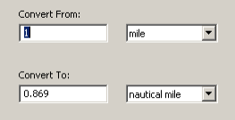
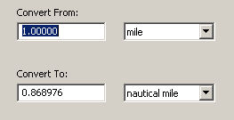
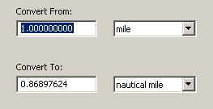
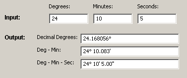
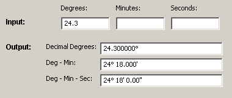
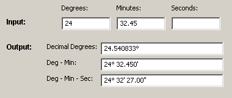

NUCOS provides a set of units for each physical quantity. Most of these follow a similar interface:
If you enter anything invalid (such as letters, rather than a number) in the Input box, the Output display will be blank.
By default, the output will display 3 significant figures. If you want more, enter more digits in the Input box. For instance:
  
Note that the maximum significant figures for output is 7 because the input conversion factors only have 7 significant figures.
A number of special cases exist for units that are not a multiplicative factor with simple input-output. These special cases include the units for (1) Oil Concentration, (2) Kinematic Viscosity, (3) Latitude/Longitude, and (4) Oil Quantity.
Oil concentration is usually expressed as volume divided by area, such as "barrels per acre." Technically, this is a length unit (length cubed divided by length squared). However, the unit has a different meaning in the field so in NUCOS, it was separated from the other length units to avoid confusion.
Oil conversion units are used like the rest of the "standard" units in NUCOS.
Kinematic Viscosity is a tricky unit. Many of the units used are not directly physical units, but rather the results of standard testing methods (Saybolt Universal Seconds (SUS) or Saybolt Furol Seconds (SFS)). Because these units depend on temperature and the properties of the oil at hand, accurate conversion is difficult. For a full method, see:
Document ASTM D 2161: Standard Practice for Conversion of Kinematic Viscosity to Saybolt Universal Viscosity or to Saybolt Furol Viscosity.
In NUCOS, simple approximations are made that should give answers accurate enough for most response work, at least for values above 100 centistoke (cSt).
The Latitude/Longitude (Lat-Long) window converts the different formats for expressing latitude and longitude degrees:
On the Latitude/Longitude window, there are three Input boxes: Degrees, Minutes, and Seconds. In these boxes, enter the values to be converted. The Output box will show the converted values.
Note that you can enter a decimal value in either the Degrees or Minutes box:



NUCOS prevents you from accidentally entering decimal degrees plus minutes or seconds. Similarly, it prevents you from entering decimal minutes plus seconds. If you try to do this, the NUCOS output will be empty.
On the Latitude/Longitude window there are three Output boxes, which display values all at once:
Although you can't enter values in these boxes, you can copy and paste values from them. The output uses Unicode for the degree symbol, so the symbol should copy and paste well into most current applications, including Firefox, Thunderbird, Internet Explorer, and Microsoft Word.
The Oil Quantity window provides conversions between different ways of expressing amounts of oil. Some standard methods use volume (barrels or bbls), while some use mass (tonnes). To convert between these methods, the density of the oil must be known.
NUCOS provides a list of "standard" oils with approximate associated values for API gravity (density). If you know the density of the oil to be used in your conversion, you can enter it using any of the density units provided in the Oil Density unit menu. When you enter an oil density value, the oil type will change to "unknown."
Once a density is entered or provided by NUCOS, you can calculate either mass from volume, or volume from mass. You can enter a value in either Input box, and the other will be calculated. If you later change the density, NUCOS will remember the box you last altered, and will re-calculate the other values. The values shown should always be in sync; the triple of mass, density, and volume should be consistent. If you want one of them different, you can change it and the others will be re-calculated.
In the Oil Quantity window...
You can learn more about NUCOS from the OR&R Web site:
Questions or comments? Contact the NUCOS Specialist: